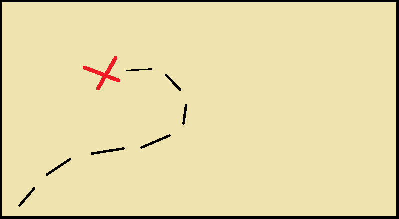

systemenhet och kringutrustning
dator
data
mjukvara
hårdvara
arbetade som datorer eller beräknare kulram
babbage och lovelace programerbar dator
6 generationer
generation -1 mekaniska datorer,
experimenterande, människor
jacuardian loom =vävstol 1800-tal,
vävde beroende på hålkort alltså utförde
beräkningar
generation 1. babbage och lovelace maskin och programmering
Alan Turing 1936, algoritmer inte aretmik magnetiska trummer att lagra mjukvara i samma nu men effektivare, elektronrör med ljus och värme och behövdes då bytas ut, eniac 18000 elektronrör tog upp ett helt hus
generation 2 transistorer mindre och svalare,
massproduktion, hög nivå programering
liknar vårat språk ifsatser osv,
generation 3 intergrerade kretsar, spår av
moderkort och liknande
generation 4 mikroprocessorer, mindre datorer
får plats på skrivbord grafiska
grännssnitt och möss
generation 5 existerar inte än
persondator 70-tal, apple
80-tal persondator klassifikation
90-tal pc intergreras i hemmen windows 3.1
apple grafik atari och de grafik försvann
telefon=dator
android
IOS
datalagring
8 16 32 64 255 1024
från hålkort
binär 0 eller 1
ja eller nej
bit = en binär siffra
ASCII en tabell för binär äldre standard
UTF UTF8 uniform translation format också nyare standard
ett tecken 8 bits = 1 byte
byte =8 bits
kilobyte=1024Bytes
megabyte=1024kiloBytes osv
bit = b Byte = B
överföring => 1000
lagring => 1024
sekundär och primär minne
sekundär hårdisk och lagring usbminnen
primär icke beständigt endast när el mindre men snabbare RAM
hdd eller ssd
hard disk drive mekanisk arm som läser magnetiska lagringar
solid state drive ickemekanisk elektroniska, inte lika stora snabbare
magnetband och disketter
servrar använder magnetband flera hundra meter
disketter = floppy disks
under 200 megabyte
optisk lagring till exempel cd skivor
700 megabyte
bluray kan läsa cd men det går inte andra hållet
usb olika varianter
minneskort olika storlekar och format